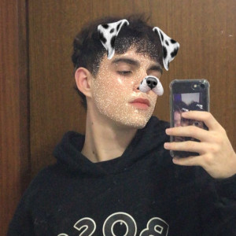

Introdução
Olá, meu nome é Kauã Mayerle, e estou dando início ao meu primeiro projeto, com o intuito de colocar em palavras os pensamentos que vêm à minha mente.
Sobre meu relacionamento
Atualmente, tenho o privilégio de ter como companheira uma jovem admirável chamada Emanuelly. Nosso relacionamento é fundamentado no respeito mútuo, na cumplicidade e no constante desejo de crescimento pessoal e emocional.
Esportes que prático
Além disso, desejo enfatizar minha paixão pelo esporte. O basquete e o vôlei são duas atividades que me trazem alegria e desafio físico. Tenho dedicado parte do meu tempo ao aprimoramento dessas habilidades, buscando sempre o equilíbrio entre o trabalho e a prática esportiva.
Curso que estou me formando
No que tange à minha vida profissional, recentemente iniciei uma incursão no mundo do desenvolvimento web, focando especificamente na linguagem HTML. Tenho direcionado meus esforços e estudos com o objetivo de aprimorar minhas competências nessa área, vislumbrando uma possível carreira nesse campo promissor. Estou empolgado com as possibilidades que essa área proporciona, e tenho confiança de que, por meio da dedicação e aprendizado contínuos, poderei alcançar o sucesso profissional almejado.